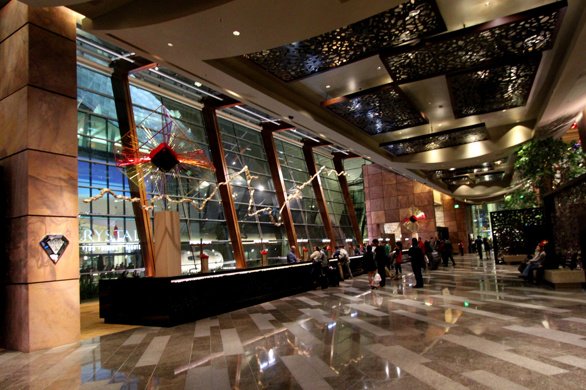
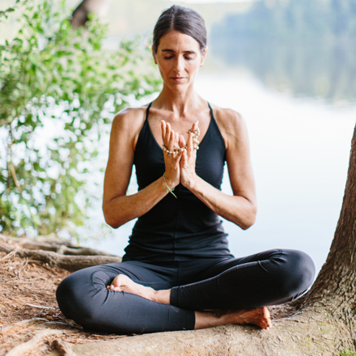

To make a reservation for an amazing vacation, please contact our Reservations Desk and one of our helpful agents will be glad to assist you:
Reservations
Office Hours: 7 a.m. - 10 p.m. MST*
Phone:
* After-hours callers, please leave a message and one of our helpful reservations specialists will return your call.
General Information
Activities and Events
Event Coordinator: Rob Cox
Phone:
EXT: 5375
Business Office:
Phone:
EXT: 7890
Catering Services:
Phone:
EXT: 5307
Conference Center:
Phone:
EXT: 7222
Human Resources Office
Personnel Director: David Anderson
Phone:
Paradise Garden Day Spa and Aphroditeís Nail Salon
Spa treatments are available seven days a week between 9:00 a.m. and 5:00 p.m. The Paradise Mountain Resort also features a full-service hair and nail care salon for your convenience. Advance reservations for appointments are highly recommended.
For further information or to reserve your treatment, please contact:
Spa General Manager:
Cindy Carlson
Phone:
Aphroditeís Salon
Manager: Shelia Sullivan
Phone:
Trainer's Paradise Fitness Center

Trainer's Paradise Fitness Center believes in creating just the right balance of health and fun during your vacation. Here, you’ll find inspiring instructors, recreation and fitness classes to get you moving and increase your energy. Our team of fitness trainers and instructors are encouraging and focused on challenging and motivating you to build your healthier you.
If you would like to know more about our group exercise schedules or would like to speak to one of our highly trained fitness guru's, please contact:
Helga Jorgenson or Franz Schuler at:
Phone:
For all other questions and inquiries, please write to or call the Front Desk at:
Paradise Mountain Family ResortP.O. Box 17603
Estes Park, CO 80517
Phone: